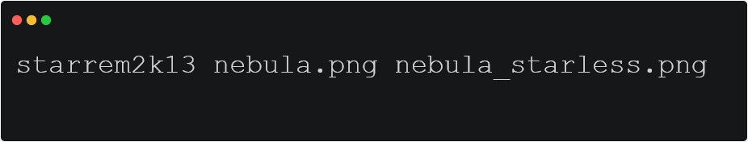

Starrem2k13, a simple, easy tool and open source for removing stars from deep sky images.

Getting Started
Simply unzip the downloaded zip archive and run the below command in command prompt:
starrem2k13 image_with_stars.jpg starless.jpg
Execute the following commands:
tar -xvzf starrem2k13_ubuntu_20.04.tar.gz
cd starrem2k13_ubuntu_20.04
chmod +777 starrem2k13
starrem2k13 image_with_stars.jpg starless.jpg
Unzip all the contents of the downloaded archive to a folder. Open Terminal, navigate to the
folder and
type the following command:
starrem2k13 image_with_stars.jpg starless.jpg
Make sure you have docker installed and then execute :
docker run -v $PWD:/usr/src/app/starrem2k13/data \
-it code2k13/starrem2k13 \
/bin/bash -c "./starrem2k13.py ./data/example.jpg ./data/example_starless.jpg"
Note that $PWD refers to your current working directory. In the above example it is
assumed that the file example.jpg resides in your current working directory. This
directory is mounted as a volume with the path /usr/src/app/starreduction/data inside
the docker container. The output image example_starless.jpg will also be written to same
directory.